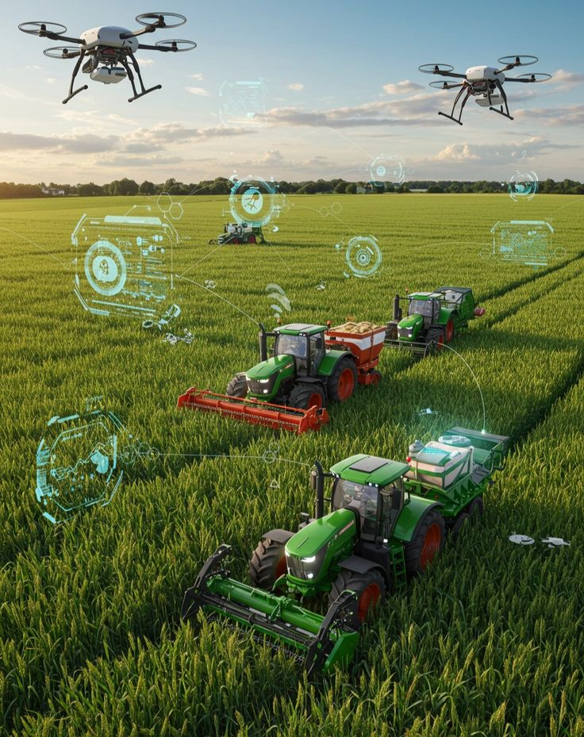
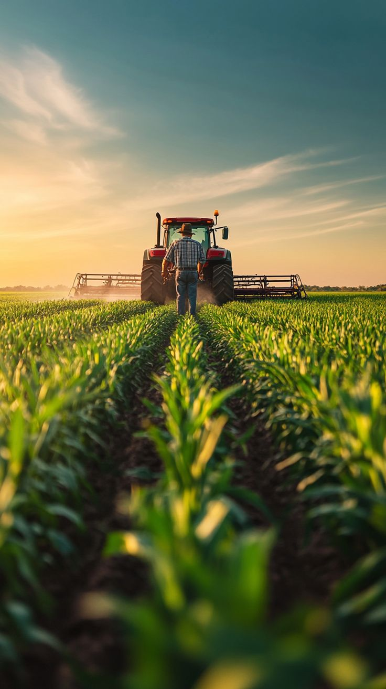
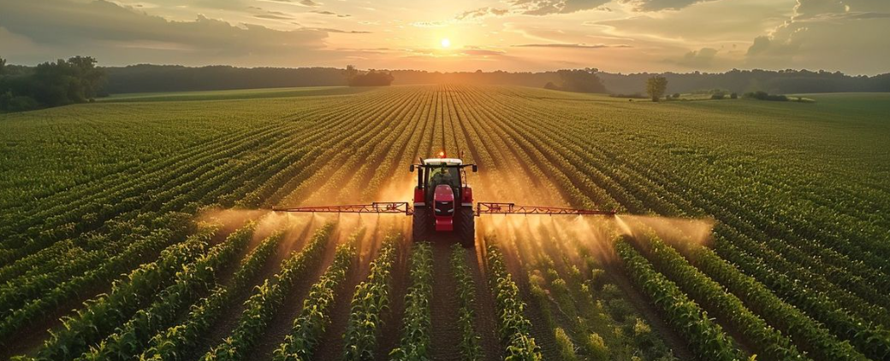
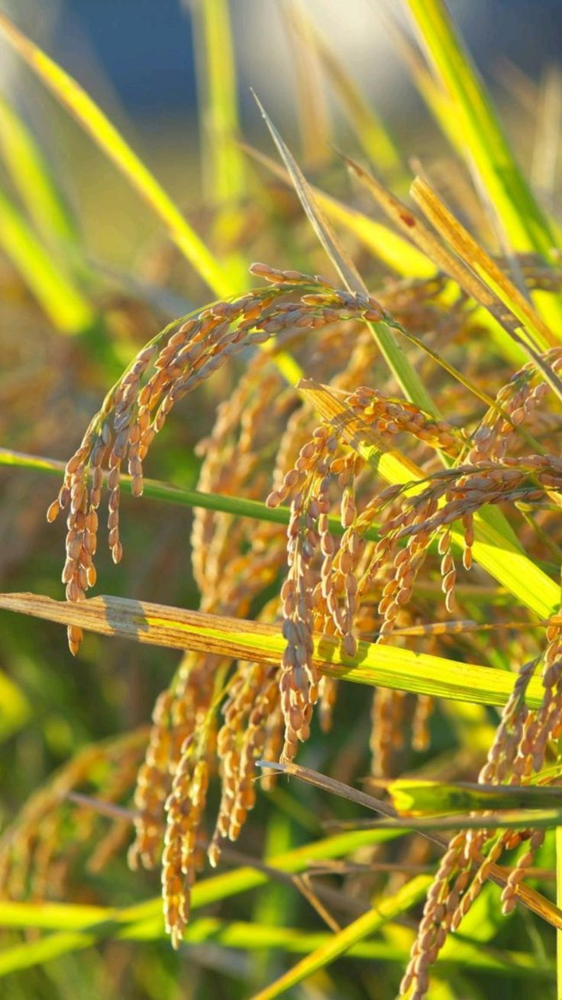
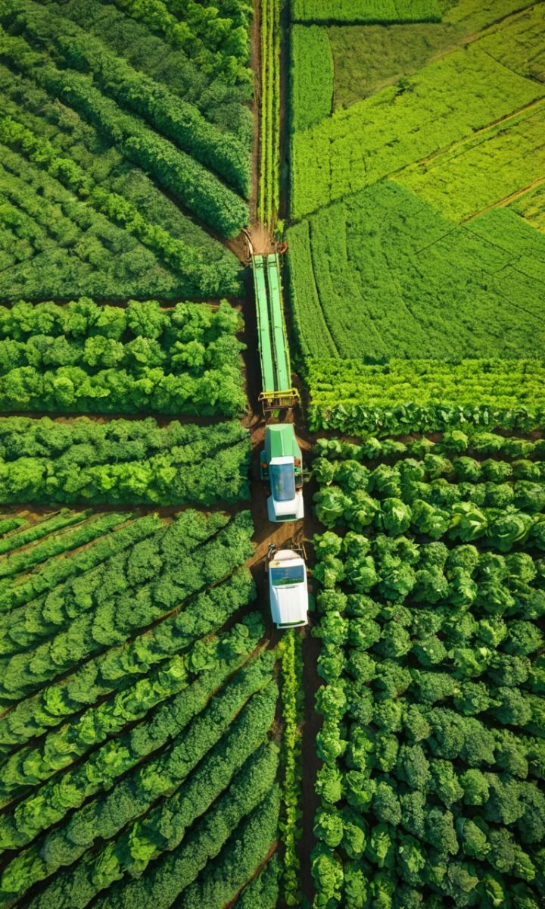

CPCIC leads investment in solar, hydro, and green tech energy systems to power Rwanda sustainably.

We design, build, and innovate strong architectural and structural projects across the country.

CPCIC extracts, refines, and processes minerals through advanced, eco-safe mining practices.
Building Rwanda’s future through infrastructure, energy, agriculture, and mining innovation.

CPCIC drives Rwanda’s transition to reliable and sustainable energy by investing in solar, hydro, and modern renewable technologies. The Energy Division develops large-scale power plants, rural electrification solutions, and smart-grid systems to ensure efficient distribution. Its focus is creating long-term energy security and supporting national economic growth through cleaner, affordable power.

The Construction Division leads major infrastructure projects, delivering durable roads, bridges, commercial buildings, and residential developments. CPCIC applies advanced engineering standards, modern equipment, and strict safety practices. Through high-quality construction and innovative planning, this division supports Rwanda’s urban growth and ensures communities gain access to strong, efficient, and sustainable public infrastructure.

CPCIC’s Mining Division extracts and processes minerals using environmentally responsible methods. It works on mineral exploration, refining operations, and downstream value-addition to strengthen Rwanda’s mining economy. With advanced technologies and strict environmental control, the division ensures safe extraction practices while increasing national revenue and promoting sustainable development within mining communities.

The Agriculture Division improves food security by supporting irrigation, modern farming tools, and climate-smart agricultural practices. CPCIC invests in agro-processing facilities, storage systems, and farmer-support programs to reduce post-harvest losses. Its goal is creating a strong agricultural value chain that increases productivity, empowers farmers, and strengthens Rwanda’s long-term food resilience.
CPCIC continues to expand its role in national development by focusing on innovative strategies, sustainable investment, and long-term solutions for Rwanda’s economic growth. The institution collaborates with partners, government agencies, and communities to ensure that projects deliver real impact. By applying modern technology and efficient management, CPCIC strengthens national capacity while creating new economic pathways for citizens. Its commitment to transparency, sustainability, and quality remains central to its mission, ensuring that every initiative supports broader development goals and contributes to a strong and resilient national economy.
The corporation prioritizes projects that drive productivity and broaden national opportunity. Through strategic planning and careful resource allocation, CPCIC ensures that each investment produces measurable benefits. Whether developing infrastructure, supporting agriculture, or enhancing the mining sector, CPCIC works to uplift communities and promote inclusive growth. Its approach blends innovation with practicality, ensuring that long-term stability is never sacrificed for short-term gains. By staying aligned with global standards and embracing modern techniques, CPCIC strengthens Rwanda’s competitive position in regional and international markets.
Innovation is at the heart of CPCIC’s development model. The organization integrates new technologies, data-driven decision making, and sustainable methods across all divisions. This ensures that projects remain efficient, environmentally responsible, and future-ready. By training teams, adopting updated tools, and partnering with advanced institutions, CPCIC supports a culture of continuous improvement. This forward-thinking mindset equips Rwanda to tackle long-term challenges, open new opportunities, and build systems capable of supporting national development for generations to come.
CPCIC places strong emphasis on collaboration, recognizing that large-scale development requires strong partnerships between private sectors, public institutions, and communities. Through transparent communication and coordinated planning, the corporation ensures that all stakeholders are aligned and informed. This reduces implementation delays, increases efficiency, and builds trust. By involving local communities, CPCIC fosters a sense of ownership that strengthens project success and promotes sustainable development practices aligned with Rwanda’s national goals.
Sustainability remains a guiding principle within CPCIC’s operations. Every project is designed to minimize environmental impact while maximizing long-term benefits. From energy conservation and responsible mining to climate-smart agriculture, CPCIC integrates eco-friendly strategies across all divisions. This ensures that economic progress does not compromise the health of future generations. Through consistent monitoring, updated standards, and responsible management, the corporation promotes balanced development that protects natural resources while supporting national advancement.
Looking ahead, CPCIC is focused on expanding innovation, diversifying projects, and strengthening national competitiveness. With clear goals and a dedicated team, the corporation is positioned to lead transformative initiatives that elevate Rwanda’s regional leadership. Continued investment in technology, infrastructure, and human capital will ensure long-term progress. By aligning with national priorities and adapting to global changes, CPCIC remains committed to shaping a prosperous, sustainable, and resilient future for the country.